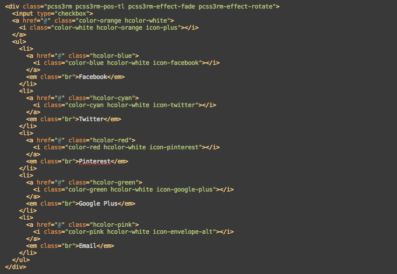
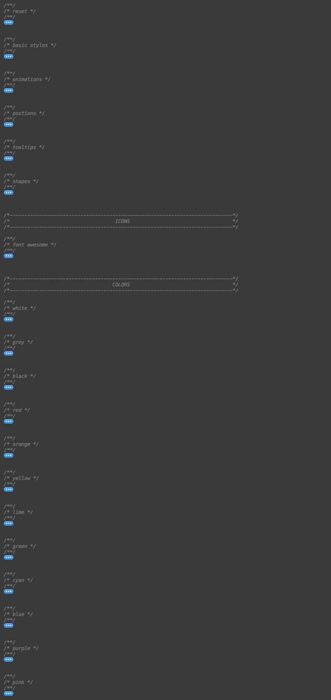

Created: 11/03/2013
By: Novikov Aleksandr (Voky)
Email: voky.com.ua@gmail.com
Thank you for purchasing Round Menu. If you have any questions that are beyond the scope of this help file, please feel free to email via my user page contact form here. Thanks so much!
The main HTML structure of the menu consists of list items and switcher. Each item contains link, icon, and optional tooltip. Here is the structure with 5 items.

This menu contains three CSS files:
The file "pcc3rm.css" contains all of the specific styling. The file is separated into sections:

If you would like to edit a specific section, simply find the appropriate label in the CSS file.
This menu uses jQuery library and contain one file "ie8.js". They need only for IE8 support, so don't include them if you don't need it.
1. Include necessary CSS and JS files.
<link rel="stylesheet" href="css/pcss3rm.css"> <!--[if lt IE 9]> <link rel="stylesheet" href="css/pcss3rm-ie8.css"> <script src="http://ajax.googleapis.com/ajax/libs/jquery/1.9.1/jquery.min.js"></script> <script src="js/ie8.js"></script> <![endif]-->
2. Copy HTML code of the menu from one of demo files.
3. Replace demo menu elements with yours.
There are 16 animation effects that you can use. All you need is to add the appropriate class to menu container. For example, if you want the "All at once + Fade" effect, class name should be: "pcss3rm-effect-aao pcss3rm-effect-fade". You can find all available effects and classes in table below.
| Effect | Class name |
|---|---|
| One by one (default) | - |
| One by one + Fade | pcss3rm-effect-fade |
| One by one + Rotate | pcss3rm-effect-rotate |
| One by one + Scale | pcss3rm-effect-scale |
| One by one + Fade + Rotate | pcss3rm-effect-fade pcss3rm-effect-rotate |
| One by one + Fade + Scale | pcss3rm-effect-fade pcss3rm-effect-scale |
| One by one + Rotate + Scale | pcss3rm-effect-rotate pcss3rm-effect-scale |
| One by one + Fade + Rotate + Scale | pcss3rm-effect-fade pcss3rm-effect-rotate pcss3rm-effect-scale |
| All at ones | pcss3rm-effect-aao |
| All at ones + Fade | pcss3rm-effect-aao pcss3rm-effect-fade |
| All at ones + Rotate | pcss3rm-effect-aao pcss3rm-effect-rotate |
| All at ones + Scale | pcss3rm-effect-aao pcss3rm-effect-scale |
| All at ones + Fade + Rotate | pcss3rm-effect-aao pcss3rm-effect-fade pcss3rm-effect-rotate |
| All at ones + Fade + Scale | pcss3rm-effect-aao pcss3rm-effect-fade pcss3rm-effect-scale |
| All at ones + Rotate + Scale | pcss3rm-effect-aao pcss3rm-effect-rotate pcss3rm-effect-scale |
| All at ones + Fade + Rotate + Scale | pcss3rm-effect-aao pcss3rm-effect-fade pcss3rm-effect-rotate pcss3rm-effect-scale |
There are 10 defined menu positions. To use one of them you need to add appropriate class to menu container. For example, if you want the "Top-left" position, class name should be: "pcss3rm-pos-tl". You can find all available positions and classes in table below.
| Position | Class name |
|---|---|
| Top-left (max 5 items) | pcss3rm-pos-tl |
| Top (max 9 items) | pcss3rm-pos-t |
| Top-right (max 5 items) | pcss3rm-pos-tr |
| Right (max 9 items) | pcss3rm-pos-r |
| Bottom-right (max 5 items) | pcss3rm-pos-br |
| Bottom (max 9 items) | pcss3rm-pos-b |
| Bottom-left (max 5 items) | pcss3rm-pos-bl |
| Left (max 9 items) | pcss3rm-pos-l |
| Center (max 16 items) | pcss3rm-pos-c |
There are 6 defined tooltip positions. To use one of them you need to add appropriate class to <em> tag. For example, if you want the "Bootom-left" position, the code of the tooltip should be: "<em class="bl">some text</em>". You can find all available positions and classes in table below.
| Position | Tooltip code |
|---|---|
| Top-left | <em class="tl">some text</em> |
| Top-right | <em class="tr">some text</em> |
| Right | <em class="r">some text</em> |
| Bottom-right | <em class="br">some text</em> |
| Bottom-left | <em class="bl">some text</em> |
| Left | <em class="l">some text</em> |
There are 4 possible shapes of the buttons. To use one of them you need to add appropriate class to menu container. For example, if you want the "Rounded square" shape, class name should be: "pcss3rm-shape-rsquare". You can find all available shapes and classes in table below.
| Position | Class name |
|---|---|
| Circle (default) | - |
| Ellipse | pcss3rm-shape-ellipse |
| Square | pcss3rm-shape-square |
| Rounded square | pcss3rm-shape-rsquare |
There are 249 font icons. To use one of them you need to add appropriate class to <i> tag. All available classes for font vector icons you can find here.
There are 12 defined colors and unlimited color combinations. To use one of them you need to add appropriate class to <a> tag. For example, if you want the orange color for regular state and red color for hover state, the code should be: "<a class="color-orange hcolor-red"></a>". You can find all available colors and classes in table below.
| Position | Regular state class name | Hover state class name |
|---|---|---|
| White (default) | - | - |
| Grey | color-grey |
hcolor-grey |
| Black | color-black |
hcolor-black |
| Red | color-red |
hcolor-red |
| Orange | color-orange |
hcolor-orange |
| Yellow | color-yellow |
hcolor-yellow |
| Lime | color-lime |
hcolor-lime |
| Green | color-green |
hcolor-green |
| Cyan | color-cyan |
hcolor-cyan |
| Blue | color-blue |
hcolor-blue |
| Purple | color-purple |
hcolor-purple |
| Pink | color-pink |
hcolor-pink |
I've used the following images, icons or other files as listed.
Once again, thank you so much for purchasing this item. As I said at the beginning, I'd be glad to help you if you have any questions relating to this product. No guarantees, but I'll do my best to assist.
Novikov Aleksandr